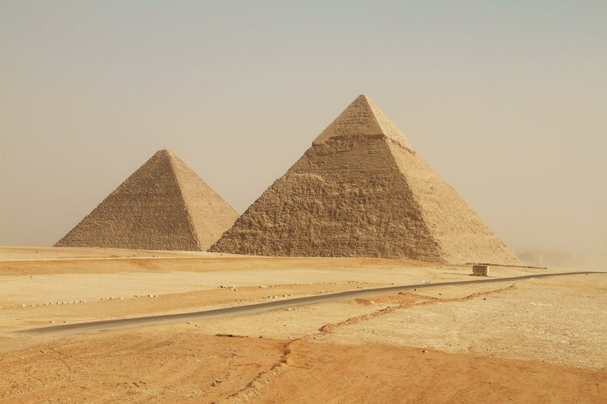

Добірка цікавих фактів про Стародавній Єгипет
Стародавній Єгипет — одна з найбільш загадкових та величних цивілізацій, яка існувала близько 3000 років. Єгипетський світ відзначався багатою культурою, досягненнями у науці, архітектурі, а також глибокими релігійними віруваннями.
- Час правління фараонів: Стародавній Єгипет існував понад 3 тисячі років, і ним правили понад 300 фараонів. Першим фараоном вважається Нармера (Менес), який об’єднав Верхній та Нижній Єгипет.
- Вони винайшли перші календарі: Єгиптяни створили перший 365-денний календар, поділивши рік на 12 місяців по 30 днів і додавши 5 додаткових святкових днів. Цей календар допомагав передбачати розливи Нілу.
- Піраміди: Найвідоміша з пірамід, піраміда Хеопса в Гізі, була побудована близько 2580-2560 років до нашої ери і є однією з семи чудес стародавнього світу, збереглася до наших днів.
- Гігантські храми: Храм Карнака – це один із найбільших релігійних комплексів у світі, який присвячений богові Амону. Його будівництво почалося в XV столітті до н.е. і тривало близько 2 тисяч років.
- Єгипетські лікарі були майстрами своєї справи: Стародавні лікарі добре розумілися на анатомії та лікуванні травм. Вони використовували мед, часник і пиво як антисептики, а для знеболення — макові настоянки.
- Муміфікація: Стародавні єгиптяни вірили в потойбічне життя і проводили процес муміфікації, щоб зберегти тіла померлих. Вони видаляли внутрішні органи і змазували останки бальзамуючими речовинами, щоб запобігти розкладенню.
- Система письма: Єгипетське письмо, відоме як ієрогліфи, складалося з понад 700 знаків і використовувалося для написання на стінах храмів, papyrusах, і в офіційних документах.
- Улюблена настільна гра — сенет: Це одна з перших відомих настільних ігор у світі. Вона мала не лише розважальну, а й релігійну функцію, символізуючи подорож душі до загробного життя.
- Астрономія та календар: Стародавні єгиптяни були вмілими астрономами. Вони створили 365-денний календар, базуючись на циклах Сонця та зірок, що стало основою для подальшого розвитку календарних систем.
- Перші "контракти" з роботодавцями: Робітникам, які будували піраміди, платили хлібом і пивом. Одного дня вони споживали до 4 літрів пива!
- Культура та релігія: Єгиптяни мали багатий пантеон богів і богинь, включаючи Ра (бога Сонця), Ісіду (богиню материнства) та Осіріса (бога потойбічного життя). Релігія грала центральну роль у повсякденному житті.
- Єгиптяни любили парфуми: Вони виготовляли парфуми з олій та ароматичних смол, таких як мирра та ладан. Духи мали не лише естетичну, але й ритуальну функцію.
- Суспільна структура: Єгипетське суспільство було строго ієрархічне, з фараоном на вершині, потім були жреці, аристократи, торговці, селяни і раби.
- У них були "вічні чорнила": Єгиптяни створювали чорнила з вугілля, меду та клею, які зберігаються тисячі років. Саме завдяки цьому ми можемо читати їх тексти на папірусі.
- Вони використовували систему каналізації: Багаті домівки у Стародавньому Єгипті мали системи для відведення води, що значно випереджало свій час.
- Торгівля і багатство: Єгипет був важливим торговим центром завдяки своєму географічному положенню. Вони торгували золотом, папірусом, меблями, коштовностями та іншими товарами з навколишніми країнами.
Піраміди
Diego Ferrari Піраміди Гізи, особливо Велика піраміда Хеопса, є символом Стародавнього Єгипту. Ці архітектурні шедеври створювалися для збереження душ фараонів у їхньому переході до загробного життя.
Єгипетські піраміди – це не лише вражаючі архітектурні шедеври, а й символи давньої цивілізації,
які протягом тисячоліть
захоплюють уяву людей. Ці величні споруди, створені як гробниці для фараонів, вражають своїми
масштабами, точністю
інженерних рішень та загадковістю, що досі оточує їхнє зведення.
Перші піраміди почали з'являтися приблизно в III тисячолітті до нашої ери, на тлі розвитку
державності та релігійних
вірувань Єгипту. Найбільш відомі з них були зведені в період IV династії, коли фараони, такі як
Хеопс, Хефрен і Мікерін,
прагнули створити величні гробниці, які б забезпечили їм безсмертя.
Піраміди почали зводити в епоху Стародавнього царства (бл. 2686–2181 рр. до н. е.), досягнувши
свого розквіту за часів
IV династії (бл. 2613–2494 рр. до н. е.). Вони слугували місцем поховання фараонів, яких вважали
божественними
правителями, а також символізували їхню владу та вічне життя.
Боги та релігія
Стародавні єгиптяни мали розгалужений і складний пантеон богів та релігійних вірувань, які займали важливе місце в їхньому житті. Релігія була глибоко пов'язана з природою, сільським господарством і повсякденними звичаями, надаючи пояснення багатьом природним явищам.
1.Пантеон богів
Єгипетська міфологія налічує сотні богів, кожен із яких мав свої функції та атрибути. Ось кілька найбільш значущих:
- Ра: бог сонця, часто вважається головним богом, символом життя та світла.
- Осіріс: бог підземного світу, асоціюється з відновленням і вічним життям.
- Ісіда: дружина Осіріса, богиня магії, материнства та жіночності.
- Гор: бог неба, син Осіріса та Ісіди, священний покровитель фараонів.
- Анубіс: бог муміфікації та захисту померлих, асоціюється з похоронами.
2.Релігійні практики
Релігійні обряди були важливою частиною життя єгиптян. Серед них:
- Поклоніння богам: єгиптяни приносили жертви та проводили ритуали в храмах.
- Муміфікація: процес збереження тіл померлих для їхнього вічного життя, який включав релігійні обряди.
- Будівництво храмів: величезні храми були зведені на честь богів, такі як храм у Карнаці або храм Хатшепсут у Дейр-ель-Бахарі.
3.Концепція потойбіччя
Єгиптяни вірили в загробне життя. Осіріс був символом воскресіння, а віртуальні суди влаштовувалися після смерті, щоб визначити, чи заслуговує душа на вічне життя. Весло чекав на серце померлого, яке важили на терезах проти пера Маат (символ правди і справедливості).
4.Маат
Маат – це концепція порядку, справедливості та істини, яка також була вшанована як богиня. Її принципи становили основу єгипетської цивілізації та формували моральні й соціальні норми. Стародавній Єгипет вирізнявся своїм складним і багатогранним підходом до релігії, який не лише пояснював природні явища, але й закладав основи соціальної структури та культури. Якщо вас цікавлять конкретні аспекти або деталі, не соромтеся запитувати!
Ніл — дарунок богів
Річка Ніл була серцем Єгипту, забезпечуючи родючі землі для сільського господарства. Її сезонні розливи забезпечували життєво важливу воду для вирощування пшениці та інших культур.
1.Життєво важливе джерело води
Ніл — одна з найдовших річок у світі, яка забезпечувала єгиптян водою в умовах сухого клімату. Ця річка стала основним джерелом води для сільського господарства, що було вкрай важливо для виживання.
2.Запліднення ґрунту
Щорічні повені Нілу приносили з собою родючу мулистычу ґрунт, що сприяло зростанню сільськогосподарських культур. Завдяки цьому, єгиптяни змогли вирощувати пшеницю, ячмінь і інші культури, що забезпечувало їжу для населення.
3.Торгівля і зв'язки
Ніл також слугував важливим торговим шляхом. Річка спрощувала транспортування товарів, людей і культурних ідей, що сприяло економічному розвитку та культурному обміну.
4.Релігійне значення
У релігії єгиптян Ніл часто ототожнювався з божествами. Наприклад, бог Хапі вважався божеством Нілу, і єгиптяни вірили, що саме він відповідає за щедрі врожаї та процвітання. Повінь річки сприймалася як благословення богів і вважалася необхідною для забезпечення добробуту.
5.Релігійне значення
У релігії єгиптян Ніл часто ототожнювався з божествами. Наприклад, бог Хапі вважався божеством Нілу, і єгиптяни вірили, що саме він відповідає за щедрі врожаї та процвітання. Повінь річки сприймалася як благословення богів і вважалася необхідною для забезпечення добробуту.
6.Соціальна структура
Сільське господарство, залежне від Нілу, лягло в основу суспільної структури Стародавнього Єгипту. Урожаї забезпечували фараона та державу ресурсами, необхідними для управління, будівництва храмів і пірамід, оборони та здійснення релігійних обрядів.
Отже, Ніл не лише постачав воду — він визначав розвиток усієї цивілізації, і його вплив на культуру та релігію єгиптян важко переоцінити. Якщо вас цікавлять додаткові деталі про роль Нілу або конкретні міфи та легенди, пов'язані з ним, дайте знати!
Спадщина
Стародавній Єгипет залишив величезну спадщину, що вплинула на сучасну культуру, науку та мистецтво. Сьогодні ми продовжуємо відкривати його секрети через археологічні дослідження. Ось кілька основних аспектів цієї спадщини:
1.Архітектурні досягнення
- Піраміди: Найвідомішими архітектурними пам'ятками є піраміди, зокрема Великі піраміди в Гізі. Вони символізують інженерний геній та релігійні вірування єгиптян про життя після смерті.
- Храми: Храми, такі як храм у Карнаці та храм Хатшепсут, відрізняються величною архітектурою, рельєфами і колоннадами. Вони стали свідченням релігійних практик та поклоніння богам
2.Мистецтво і живопис
- Єгипетське мистецтво характеризується своїми специфічними стилями, кольорами та символікою. Стіни гробниць прикрашалися фресками, що зображували сцени з життя померлих, богів і повсякденність.
- Статуї та барельєфи також були важливою частиною мистецтва. Вони часто мали магічне значення і покликалися на вічність, а також на забезпечення захисту душею у потойбічному світі.
3.Писемність
- Єгипетські ієрогліфи: Система письма стародавніх єгиптян – ієрогліфи – стала важливим засобом комунікації та зберігання історії. Вона слугувала для запису історичних подій, релігійних текстів і бізнес-документів.
4.Наука і медицина
Єгиптяни досягли значного прогресу в медицині. Вони практикували хірургію, використовували різноманітні лікарські рослини та мали знання про анатомію, отримані завдяки муміфікації. Астрономія та геометрія також були розвинуті, що допомогло в сільському господарстві та будівництві.
5.Релігія та міфологія
Релігійні вірування стародавніх єгиптян значно вплинули на подальші релігійні системи. Міфологія, що включає історії про богів, їхні взаємодії та роль у створенні світу, стала основою для розуміння життя, смерті та загробного життя.
6.Торгівля і економіка
Стародавній Єгипет був важливим центром торгівлі, що спростило обмін товарами та культурними ідеями між різними регіонами, такими як Африка, Азія і Європа.
7.Вплив на сучасну культуру
Спадщина Стародавнього Єгипту продовжує впливати на сучасну культуру, архітектуру, мистецтво та літературу. Приміром, єгипетська тематика часто присутня в кінематографі, фольклорі та мистецтві.
Спадщина Стародавнього Єгипту є безцінною частиною світової історії, що продовжує викликати потужний інтерес та захоплення. Якщо вас цікавлять специфічні аспекти спадщини, такі як конкретні артефакти, міфи або культурні впливи, дайте знати!